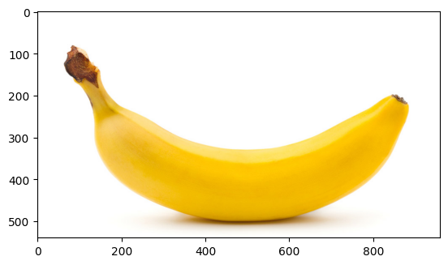

Serving TensorFlow models with TFServing
Author: Dimitre Oliveira
Date created: 2023/01/02
Last modified: 2023/01/02
Description: How to serve TensorFlow models with TensorFlow Serving.

Introduction
Once you build a machine learning model, the next step is to serve it. You may want to do that by exposing your model as an endpoint service. There are many frameworks that you can use to do that, but the TensorFlow ecosystem has its own solution called TensorFlow Serving.
From the TensorFlow Serving GitHub page:
TensorFlow Serving is a flexible, high-performance serving system for machine learning models, designed for production environments. It deals with the inference aspect of machine learning, taking models after training and managing their lifetimes, providing clients with versioned access via a high-performance, reference-counted lookup table. TensorFlow Serving provides out-of-the-box integration with TensorFlow models, but can be easily extended to serve other types of models and data."
To note a few features:
- It can serve multiple models, or multiple versions of the same model simultaneously
- It exposes both gRPC as well as HTTP inference endpoints
- It allows deployment of new model versions without changing any client code
- It supports canarying new versions and A/B testing experimental models
- It adds minimal latency to inference time due to efficient, low-overhead implementation
- It features a scheduler that groups individual inference requests into batches for joint execution on GPU, with configurable latency controls
- It supports many servables: Tensorflow models, embeddings, vocabularies, feature transformations and even non-Tensorflow-based machine learning models
This guide creates a simple MobileNet model using the Keras applications API, and then serves it with TensorFlow Serving. The focus is on TensorFlow Serving, rather than the modeling and training in TensorFlow.
Note: you can find a Colab notebook with the full working code at this link.
Dependencies
import os
os.environ["KERAS_BACKEND"] = "tensorflow"
import json
import shutil
import requests
import numpy as np
import tensorflow as tf
import keras
import matplotlib.pyplot as plt
Model
Here we load a pre-trained MobileNet from the Keras applications, this is the model that we are going to serve.
model = keras.applications.MobileNet()
Downloading data from https://storage.googleapis.com/tensorflow/keras-applications/mobilenet/mobilenet_1_0_224_tf.h5
17225924/17225924 ━━━━━━━━━━━━━━━━━━━━ 0s 0us/step
Preprocessing
Most models don't work out of the box on raw data, they usually require some kind of preprocessing step to adjust the data to the model requirements, in the case of this MobileNet we can see from its API page that it requires three basic steps for its input images:
- Pixel values normalized to the
[0, 1]range - Pixel values scaled to the
[-1, 1]range - Images with the shape of
(224, 224, 3)meaning(height, width, channels)
We can do all of that with the following function:
def preprocess(image, mean=0.5, std=0.5, shape=(224, 224)):
"""Scale, normalize and resizes images."""
image = image / 255.0 # Scale
image = (image - mean) / std # Normalize
image = tf.image.resize(image, shape) # Resize
return image
A note regarding preprocessing and postprocessing using the "keras.applications" API
All models that are available at the Keras applications
API also provide preprocess_input and decode_predictions functions, those
functions are respectively responsible for the preprocessing and postprocessing
of each model, and already contains all the logic necessary for those steps.
That is the recommended way to process inputs and outputs when using Keras
applications models.
For this guide, we are not using them to present the advantages of custom
signatures in a clearer way.
Postprocessing
In the same context most models output values that need extra processing to meet the user requirements, for instance, the user does not want to know the logits values for each class given an image, what the user wants is to know from which class it belongs. For our model, this translates to the following transformations on top of the model outputs:
- Get the index of the class with the highest prediction
- Get the name of the class from that index
# Download human-readable labels for ImageNet.
imagenet_labels_url = (
"https://storage.googleapis.com/download.tensorflow.org/data/ImageNetLabels.txt"
)
response = requests.get(imagenet_labels_url)
# Skipping background class
labels = [x for x in response.text.split("\n") if x != ""][1:]
# Convert the labels to the TensorFlow data format
tf_labels = tf.constant(labels, dtype=tf.string)
def postprocess(prediction, labels=tf_labels):
"""Convert from probs to labels."""
indices = tf.argmax(prediction, axis=-1) # Index with highest prediction
label = tf.gather(params=labels, indices=indices) # Class name
return label
Now let's download a banana picture and see how everything comes together.
response = requests.get("https://i.imgur.com/j9xCCzn.jpeg", stream=True)
with open("banana.jpeg", "wb") as f:
shutil.copyfileobj(response.raw, f)
sample_img = plt.imread("./banana.jpeg")
print(f"Original image shape: {sample_img.shape}")
print(f"Original image pixel range: ({sample_img.min()}, {sample_img.max()})")
plt.imshow(sample_img)
plt.show()
preprocess_img = preprocess(sample_img)
print(f"Preprocessed image shape: {preprocess_img.shape}")
print(
f"Preprocessed image pixel range: ({preprocess_img.numpy().min()},",
f"{preprocess_img.numpy().max()})",
)
batched_img = tf.expand_dims(preprocess_img, axis=0)
batched_img = tf.cast(batched_img, tf.float32)
print(f"Batched image shape: {batched_img.shape}")
model_outputs = model(batched_img)
print(f"Model output shape: {model_outputs.shape}")
print(f"Predicted class: {postprocess(model_outputs)}")
Original image shape: (540, 960, 3)
Original image pixel range: (0, 255)

Preprocessed image shape: (224, 224, 3)
Preprocessed image pixel range: (-1.0, 1.0)
Batched image shape: (1, 224, 224, 3)
Model output shape: (1, 1000)
Predicted class: [b'banana']
Save the model
To load our trained model into TensorFlow Serving, we first need to save it in SavedModel format. This will create a protobuf file in a well-defined directory hierarchy, and will include a version number. TensorFlow Serving allows us to select which version of a model, or "servable" we want to use when we make inference requests. Each version will be exported to a different sub-directory under the given path.
model_dir = "./model"
model_version = 1
model_export_path = f"{model_dir}/{model_version}"
tf.saved_model.save(
model,
export_dir=model_export_path,
)
print(f"SavedModel files: {os.listdir(model_export_path)}")
INFO:tensorflow:Assets written to: ./model/1/assets
INFO:tensorflow:Assets written to: ./model/1/assets
SavedModel files: ['variables', 'saved_model.pb', 'assets', 'fingerprint.pb']
Examine your saved model
We'll use the command line utility saved_model_cli to look at the
MetaGraphDefs
(the models) and SignatureDefs
(the methods you can call) in our SavedModel. See
this discussion of the SavedModel CLI
in the TensorFlow Guide.
!saved_model_cli show --dir {model_export_path} --tag_set serve --signature_def serving_default
The given SavedModel SignatureDef contains the following input(s):
inputs['inputs'] tensor_info:
dtype: DT_FLOAT
shape: (-1, 224, 224, 3)
name: serving_default_inputs:0
The given SavedModel SignatureDef contains the following output(s):
outputs['output_0'] tensor_info:
dtype: DT_FLOAT
shape: (-1, 1000)
name: StatefulPartitionedCall:0
Method name is: tensorflow/serving/predict
That tells us a lot about our model! For instance, we can see that its inputs
have a 4D shape (-1, 224, 224, 3) which means
(batch_size, height, width, channels), also note that this model requires a
specific image shape (224, 224, 3) this means that we may need to reshape
our images before sending them to the model. We can also see that the model's
outputs have a (-1, 1000) shape which are the logits for the 1000 classes of
the ImageNet dataset.
This information doesn't tell us everything, like the fact that the pixel
values needs to be in the [-1, 1] range, but it's a great start.
Serve your model with TensorFlow Serving
Install TFServing
We're preparing to install TensorFlow Serving using
Aptitude since this Colab runs in a Debian
environment. We'll add the tensorflow-model-server package to the list of
packages that Aptitude knows about. Note that we're running as root.
Note: This example is running TensorFlow Serving natively, but you can also run it in a Docker container, which is one of the easiest ways to get started using TensorFlow Serving.
wget 'http://storage.googleapis.com/tensorflow-serving-apt/pool/tensorflow-model-server-universal-2.8.0/t/tensorflow-model-server-universal/tensorflow-model-server-universal_2.8.0_all.deb'
dpkg -i tensorflow-model-server-universal_2.8.0_all.deb
Start running TensorFlow Serving
This is where we start running TensorFlow Serving and load our model. After it loads, we can start making inference requests using REST. There are some important parameters:
port: The port that you'll use for gRPC requests.rest_api_port: The port that you'll use for REST requests.model_name: You'll use this in the URL of REST requests. It can be anything.model_base_path: This is the path to the directory where you've saved your model.
Check the TFServing API reference to get all the parameters available.
# Environment variable with the path to the model
os.environ["MODEL_DIR"] = f"{model_dir}"
%%bash --bg
nohup tensorflow_model_server \
--port=8500 \
--rest_api_port=8501 \
--model_name=model \
--model_base_path=$MODEL_DIR >server.log 2>&1
# We can check the logs to the server to help troubleshooting
!cat server.log
outputs:
[warn] getaddrinfo: address family for nodename not supported
[evhttp_server.cc : 245] NET_LOG: Entering the event loop ...
# Now we can check if tensorflow is in the active services
!sudo lsof -i -P -n | grep LISTEN
outputs:
node 7 root 21u IPv6 19100 0t0 TCP *:8080 (LISTEN)
kernel_ma 34 root 7u IPv4 18874 0t0 TCP 172.28.0.12:6000 (LISTEN)
colab-fil 63 root 5u IPv4 17975 0t0 TCP *:3453 (LISTEN)
colab-fil 63 root 6u IPv6 17976 0t0 TCP *:3453 (LISTEN)
jupyter-n 81 root 6u IPv4 18092 0t0 TCP 172.28.0.12:9000 (LISTEN)
python3 101 root 23u IPv4 18252 0t0 TCP 127.0.0.1:44915 (LISTEN)
python3 132 root 3u IPv4 20548 0t0 TCP 127.0.0.1:15264 (LISTEN)
python3 132 root 4u IPv4 20549 0t0 TCP 127.0.0.1:37977 (LISTEN)
python3 132 root 9u IPv4 20662 0t0 TCP 127.0.0.1:40689 (LISTEN)
tensorflo 1101 root 5u IPv4 35543 0t0 TCP *:8500 (LISTEN)
tensorflo 1101 root 12u IPv4 35548 0t0 TCP *:8501 (LISTEN)
Make a request to your model in TensorFlow Serving
Now let's create the JSON object for an inference request, and see how well our model classifies it:
REST API
Newest version of the servable
We'll send a predict request as a POST to our server's REST endpoint, and pass it as an example. We'll ask our server to give us the latest version of our servable by not specifying a particular version.
data = json.dumps(
{
"signature_name": "serving_default",
"instances": batched_img.numpy().tolist(),
}
)
url = "http://localhost:8501/v1/models/model:predict"
def predict_rest(json_data, url):
json_response = requests.post(url, data=json_data)
response = json.loads(json_response.text)
rest_outputs = np.array(response["predictions"])
return rest_outputs
rest_outputs = predict_rest(data, url)
print(f"REST output shape: {rest_outputs.shape}")
print(f"Predicted class: {postprocess(rest_outputs)}")
outputs:
REST output shape: (1, 1000)
Predicted class: [b'banana']
gRPC API
gRPC is based on the Remote Procedure Call (RPC) model and is a technology for implementing RPC APIs that uses HTTP 2.0 as its underlying transport protocol. gRPC is usually preferred for low-latency, highly scalable, and distributed systems. If you wanna know more about the REST vs gRPC tradeoffs, checkout this article.
import grpc
# Create a channel that will be connected to the gRPC port of the container
channel = grpc.insecure_channel("localhost:8500")
pip install -q tensorflow_serving_api
from tensorflow_serving.apis import predict_pb2, prediction_service_pb2_grpc
# Create a stub made for prediction
# This stub will be used to send the gRPCrequest to the TF Server
stub = prediction_service_pb2_grpc.PredictionServiceStub(channel)
# Get the serving_input key
loaded_model = tf.saved_model.load(model_export_path)
input_name = list(
loaded_model.signatures["serving_default"].structured_input_signature[1].keys()
)[0]
def predict_grpc(data, input_name, stub):
# Create a gRPC request made for prediction
request = predict_pb2.PredictRequest()
# Set the name of the model, for this use case it is "model"
request.model_spec.name = "model"
# Set which signature is used to format the gRPC query
# here the default one "serving_default"
request.model_spec.signature_name = "serving_default"
# Set the input as the data
# tf.make_tensor_proto turns a TensorFlow tensor into a Protobuf tensor
request.inputs[input_name].CopyFrom(tf.make_tensor_proto(data.numpy().tolist()))
# Send the gRPC request to the TF Server
result = stub.Predict(request)
return result
grpc_outputs = predict_grpc(batched_img, input_name, stub)
grpc_outputs = np.array([grpc_outputs.outputs['predictions'].float_val])
print(f"gRPC output shape: {grpc_outputs.shape}")
print(f"Predicted class: {postprocess(grpc_outputs)}")
outputs:
gRPC output shape: (1, 1000)
Predicted class: [b'banana']
Custom signature
Note that for this model we always need to preprocess and postprocess all samples to get the desired output, this can get quite tricky if are maintaining and serving several models developed by a large team, and each one of them might require different processing logic.
TensorFlow allows us to customize the model graph to embed all of that processing logic, which makes model serving much easier, there are different ways to achieve this, but since we are going to server the models using TFServing we can customize the model graph straight into the serving signature.
We can just use the following code to export the same model that already contains the preprocessing and postprocessing logic as the default signature, this allows this model to make predictions on raw data.
def export_model(model, labels):
@tf.function(input_signature=[tf.TensorSpec([None, None, None, 3], tf.float32)])
def serving_fn(image):
processed_img = preprocess(image)
probs = model(processed_img)
label = postprocess(probs)
return {"label": label}
return serving_fn
model_sig_version = 2
model_sig_export_path = f"{model_dir}/{model_sig_version}"
tf.saved_model.save(
model,
export_dir=model_sig_export_path,
signatures={"serving_default": export_model(model, labels)},
)
!saved_model_cli show --dir {model_sig_export_path} --tag_set serve --signature_def serving_default
INFO:tensorflow:Assets written to: ./model/2/assets
INFO:tensorflow:Assets written to: ./model/2/assets
The given SavedModel SignatureDef contains the following input(s):
inputs['image'] tensor_info:
dtype: DT_FLOAT
shape: (-1, -1, -1, 3)
name: serving_default_image:0
The given SavedModel SignatureDef contains the following output(s):
outputs['label'] tensor_info:
dtype: DT_STRING
shape: (-1)
name: StatefulPartitionedCall:0
Method name is: tensorflow/serving/predict
Note that this model has a different signature, its input is still 4D but now
with a (-1, -1, -1, 3) shape, which means that it supports images with any
height and width size. Its output also has a different shape, it no longer
outputs the 1000-long logits.
We can test the model's prediction using a specific signature using this API below:
batched_raw_img = tf.expand_dims(sample_img, axis=0)
batched_raw_img = tf.cast(batched_raw_img, tf.float32)
loaded_model = tf.saved_model.load(model_sig_export_path)
loaded_model.signatures["serving_default"](**{"image": batched_raw_img})
{'label': <tf.Tensor: shape=(1,), dtype=string, numpy=array([b'banana'], dtype=object)>}
Prediction using a particular version of the servable
Now let's specify a particular version of our servable. Note that when we
saved the model with a custom signature we used a different folder, the first
model was saved in folder /1 (version 1), and the one with a custom
signature in folder /2 (version 2). By default, TFServing will serve all
models that share the same base parent folder.
REST API
data = json.dumps(
{
"signature_name": "serving_default",
"instances": batched_raw_img.numpy().tolist(),
}
)
url_sig = "http://localhost:8501/v1/models/model/versions/2:predict"
print(f"REST output shape: {rest_outputs.shape}")
print(f"Predicted class: {rest_outputs}")
outputs:
REST output shape: (1,)
Predicted class: ['banana']
gRPC API
channel = grpc.insecure_channel("localhost:8500")
stub = prediction_service_pb2_grpc.PredictionServiceStub(channel)
input_name = list(
loaded_model.signatures["serving_default"].structured_input_signature[1].keys()
)[0]
grpc_outputs = predict_grpc(batched_raw_img, input_name, stub)
grpc_outputs = np.array([grpc_outputs.outputs['label'].string_val])
print(f"gRPC output shape: {grpc_outputs.shape}")
print(f"Predicted class: {grpc_outputs}")
outputs:
gRPC output shape: (1, 1)
Predicted class: [[b'banana']]
Additional resources
- Colab notebook with the full working code
- Train and serve a TensorFlow model with TensorFlow Serving - TensorFlow blog
- TensorFlow Serving playlist - TensorFlow YouTube channel